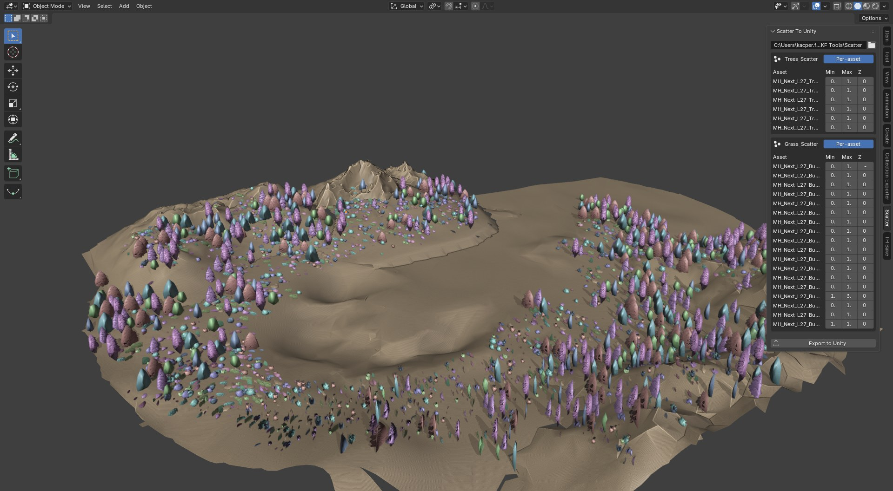
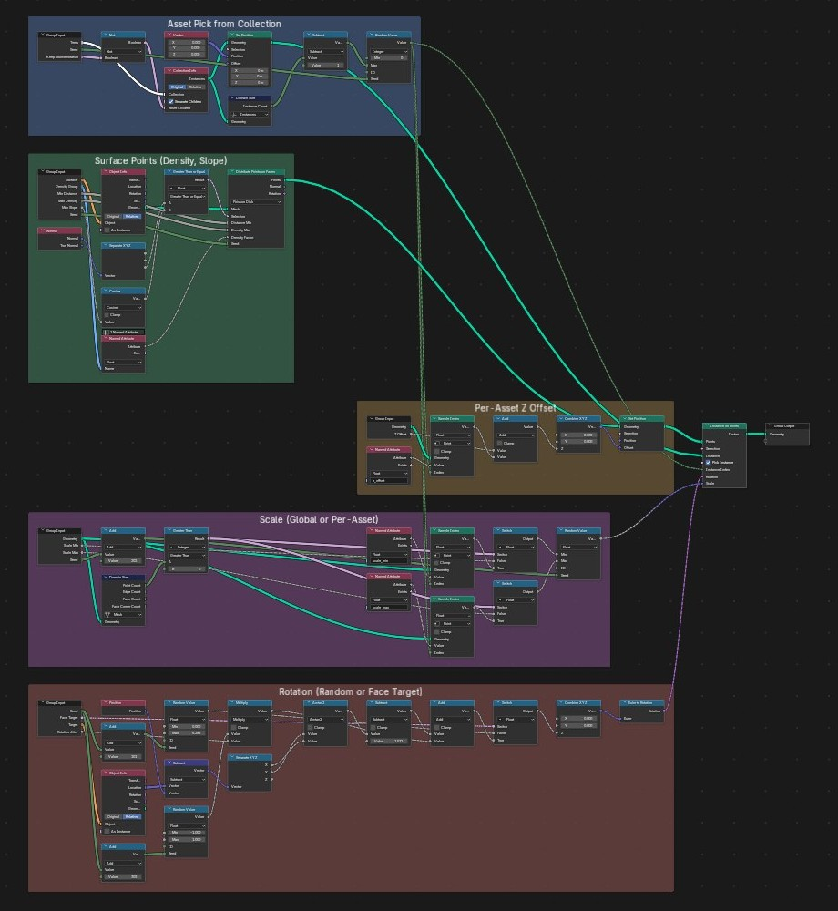
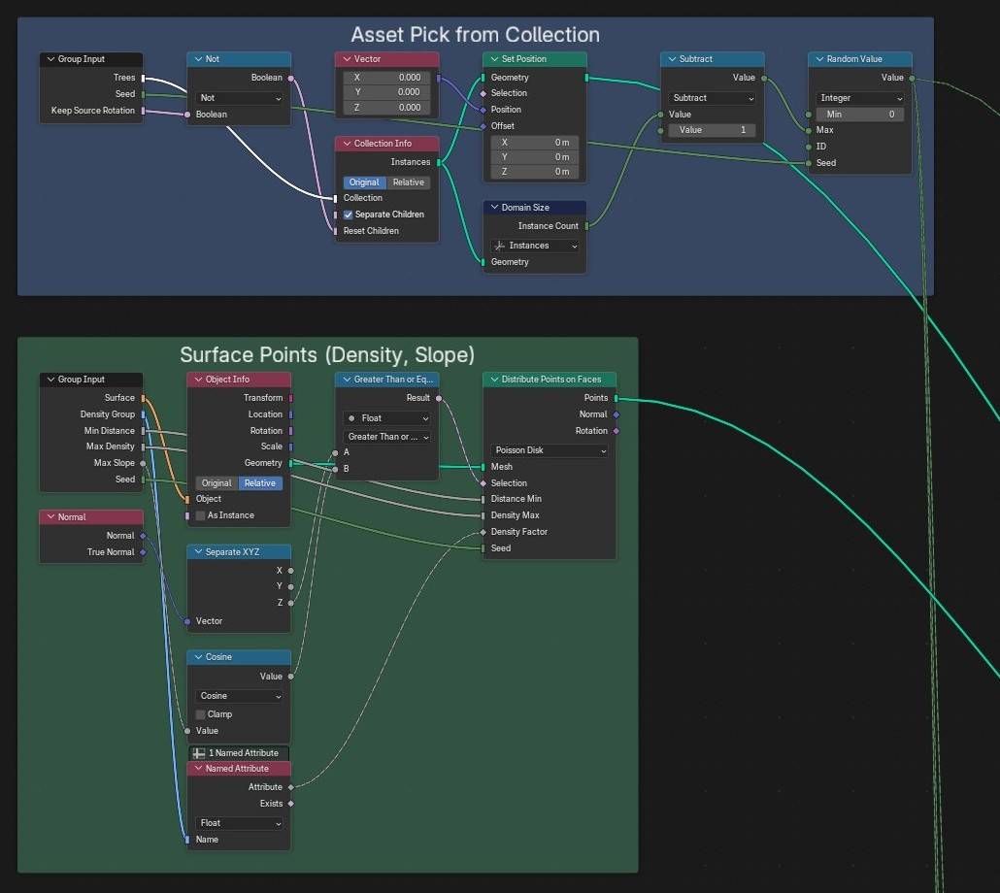
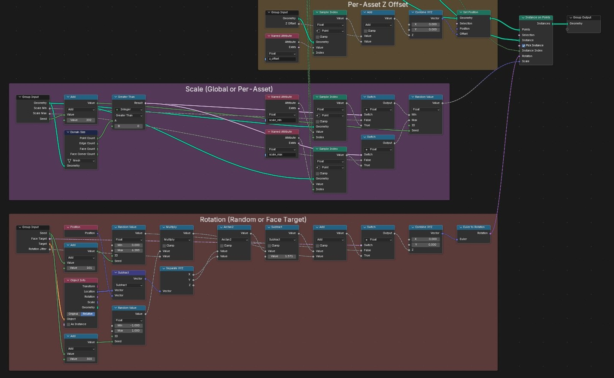

Narzędzie do rozsypywania drzew i roślinności po terenie w Blenderze, z eksportem do Unity. Geometry Nodes rozkłada punkty z kontrolą gęstości (atrybut malowany na terenie), maksymalnego nachylenia i minimalnego odstępu, losuje asset z kolekcji i ustawia skalę oraz offset Z osobno dla każdego assetu. Rotacja jest losowa albo skierowana w stronę wskazanego obiektu.
Add-on w Pythonie (panel „Scatter To Unity”) trzyma tabelę skal i offsetów per asset i jednym przyciskiem eksportuje pozycje, kierunek i skalę każdej instancji do JSON-a, który czyta importer w edytorze Unity.
Blender Geometry Nodes · Python (bpy) · Unity Editor tooling



